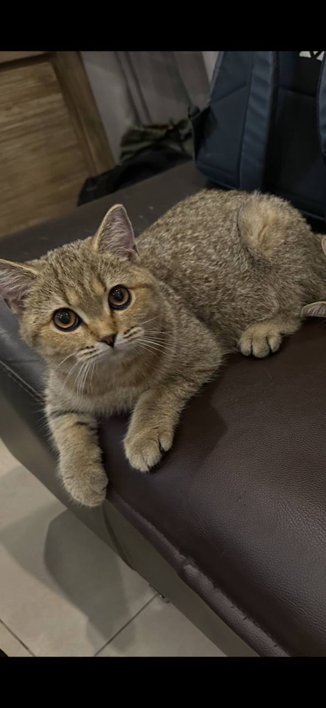

The Litter Experiment
Live
Day —
…
Moments
Can an AI raise six kittens? A 50-day open experiment, observed live — every frame judged, every moment recorded, food paid for by the market.
Status liveDay — of 50Subjects 6 kittens · 1 motherObserver AI, 24/7Next launch —
–Day ?
–Observations ?
–Recorded moments ?
–Next launch ?
Live observation ?
–in frame
–state
–events
–motion %

Mama · $LITTER
?
price–
market cap–
holders–
– cans of food funded by trading
Trade $LITTER